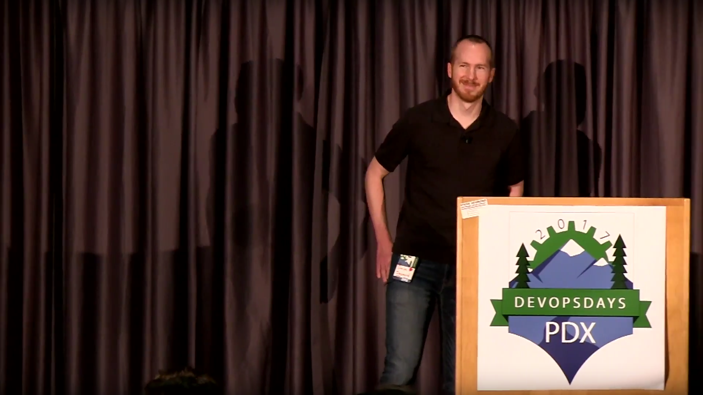
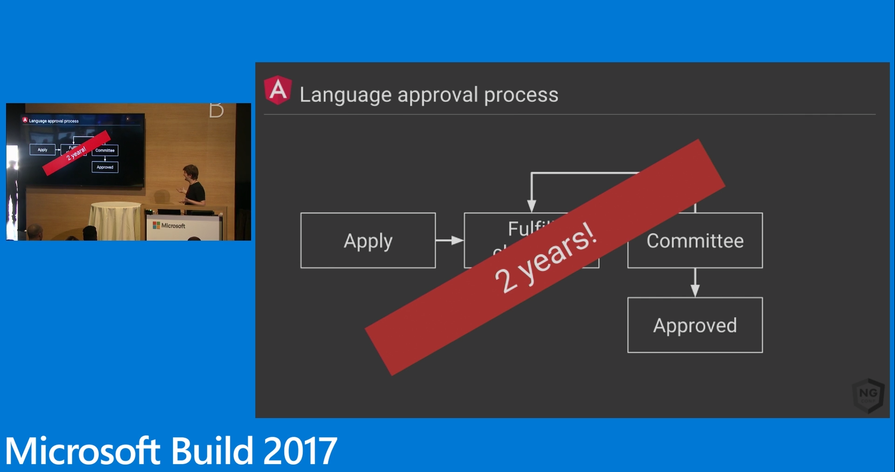
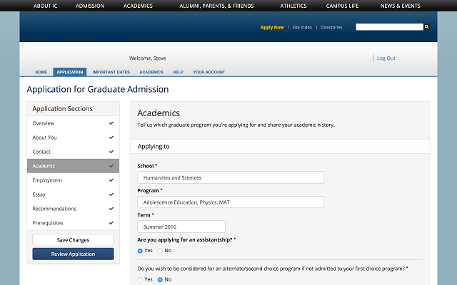
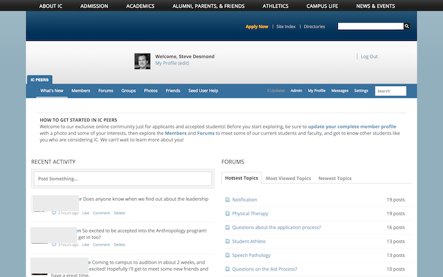
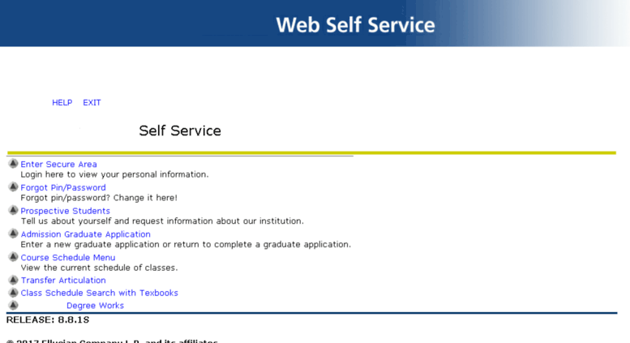

Adventures in Enterprise
Lessons Learned
Promoting DevOps
in a Legacy Organization
Steve Desmond
@stevedesmond_ca
#devopsdays


DevOpsDays Fued
What is Ithaca known for?
| Gorges | 54 |
| Cornell | 39 |
| Road Trip | 7 |
DevOps
- Culture
- Automation
- Measurement
- Sharing
Enterprise
Software used to satisfy the needs of an organization rather than individual users
- Payroll / HR systems
- Classroom / lab computers
- On-Campus LAN / Wi-Fi
Legacy
- On-premises datacenters
- Physical servers
- Weekend downtime
- Project-centric planning
- Traditional org structure
Story Time
Opportunity
Part 1
Do Not Go In
With Guns Blazing
Big Orgs Move Slow
 https://channel9.msdn.com/Events/Build/2017/T6006-R1Why?
- Stability over innovation
- Control change vs embrace it
- Physical scaling limitations
- Project-centric planning
Software is not a Building
Don't construct them the same way
PL/SQL
- Filesystem I/O
- LDAP management
- HTTP connections
Be Prepared
For More Resistance
Than You Can Imagine
Assume Awesomeness
https://github.com/BeardedCoder/RealWorldRetrosLead By Example
"Be the CAMS model!"
Don't Rock The Boat
(too much)
(or do)
Team Dynamics Are Paramount
Part 2
Celebrate Your Small Wins
Recognize Your Victories
Manifesto for Agile Software Development
We are uncovering better ways of developing software by doing it and helping others do it.
Through this work we have come to value:
- Individuals and interactions over processes and tools
- Working software over comprehensive documentation
- Customer collaboration over contract negotiation
- Responding to change over following a plan
That is, while there is value in the items on the right, we value the items on the left more.
Small Controlled Experiments
http://verraes.net/2014/03/small-controlled-experiments/Manual
ChatOps
with
Todd
Decouple from your Enterprise Systems
Extend via Configuration,
Don't Fork Vendor Code

Look for Low-Hanging Fruit
Lead Times
- ERP: 2-7 days
- Web: 5-20 minutes
Re-Org
You (as an individual)
Can't Change Culture
Part 3
Maybe DevOps Isn't Right
For Every Organization
Part 3
Maybe DevOps Isn't Right
For Every Organization
Part 3
Maybe It's Not The Right Time
For DevOps Yet
Part 3
Maybe It's Not The Right Time
For DevOps Yet
You (as an individual)
Can't Change Culture
- Spark change in others
- Lead by example (be the CAMS model!)
- Be patient
Experiment
- Low-cost
- Low-risk
- Goal = Kaizen
Decouple, Decouple, Decouple
- UI from Database
- Front-End from Back-End
- Custom Features from Vendor Software
Guide Your Team
On A Nature Hike
Don't Just Drag Them
Through The Woods
High Fives